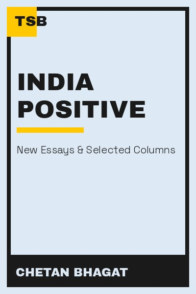

Library › Business & Startups
India Positive — Summary & Key Lessons

A bestselling writer's case for optimism about India's future.
📖 OPEN THE FULL INTERACTIVE BREAKDOWN →🌐 Read it in Hindi, Hinglish, Gujarati, Tamil & 22 more languages — free, with audio.
💡 The Big Idea
India is not a nation of problems but a nation of opportunities in progress. Bhagat's central claim: pessimism is both wrong and self-defeating — the country's scale, youth and momentum make its challenges addressable. But optimism is not passivity: it requires engaged citizens, simpler systems, and young people who build rather than complain. The book is a call to be part of the solution, not a spectator of the problem.
🧠 The 6 Key Lessons
Lesson 1: Scale Changes the Nature of Problems
The India Question
Bhagat's opening argument: India's problems look terrifying at national scale, but they are solvable when broken down — because 1.4 billion people also mean 1.4 billion problem-solvers. The lesson: size can be an advantage if you reframe it. Instead of 'too many people to fix', think 'enough people to move anything'. The same reframe works for big personal and organizational problems.
📖 Example: Digital payments, UPI and vaccination drives showed that India can move at scale when systems are designed simply and inclusively. The practical edge: 'scale changes the nature of problems' is not a one-time decision — it's a habit that compounds with every… Read the full example →
⚡ Do this: Take one problem that feels too big for you. Break it into a piece one person (you) can actually move this month.
Lesson 2: Youth Are the Engine — If Trained
The Demographic Dividend
India's young population is its famous advantage — but a dividend is only paid when youth are educated, skilled and employed. Bhagat warns: an unskilled young population is not an asset, it is a risk. The lesson: potential is not automatic — it is realized through deliberate investment. For nations and individuals alike, the question is not 'how much potential do I have?' but 'what am I doing to convert it?'
📖 Example: The gap between engineering degrees and employable skills is Bhagat's case study — degrees without capability produce frustration, not growth. Here's the part that usually gets missed: 'youth are the engine' works quietly. You won't see it working in a day;… Read the full example →
⚡ Do this: Identify one skill your field actually pays for that you lack. Allocate 30 minutes daily to it for the next 60 days.
Lesson 3: Entrepreneurship Is the Answer to Employment
Jobs and Startups
Bhagat argues that India cannot create enough government or corporate jobs — the private sector and entrepreneurship must absorb the workforce. The lesson: in a job-scarce economy, job-creation is the highest-value skill. Whether you start a business or make your existing role more valuable, the mindset shift is the same: stop waiting for a job to be given, start creating value that is paid for.
📖 Example: From local kirana digitization to food delivery, India's biggest employment stories came from small entrepreneurs enabled by cheap data and payments. The real test of this lesson is a bad day: the principle that survives a crisis, a tight deadline and a… Read the full example →
⚡ Do this: Ask yourself: what value can I create that someone would pay for? Write three ideas this week, however small.
Lesson 4: Simplicity Beats Grandeur in Systems
Governance and Policy
Bhagat's recurring critique: Indian systems — taxes, courts, permits — are complex, and complexity breeds corruption and exclusion. His prescription: simplification. The lesson: friction is not neutral — every unnecessary step in a system excludes someone and invites someone to exploit it. Whether you are designing a product, a process or a policy, simplicity is a feature of justice.
📖 Example: The contrast between complex legacy tax structures and simple digital interfaces shows how much economic energy friction quietly eats. In practice, 'simplicity beats grandeur in systems' shows up in tiny daily choices long before it shows up in outcomes —… Read the full example →
⚡ Do this: Map one process you control (onboarding, billing, scheduling). Remove one unnecessary step this week and measure the difference.
Lesson 5: Citizenship Is a Daily Practice
Be the Change
Bhagat shifts from policy to personal responsibility: vote, pay attention, follow rules, contribute — the nation is the sum of its citizens' daily behaviour. The lesson: you don't need a public role to be a public servant. The person who pays taxes honestly, doesn't litter, teaches a child, or runs a fair shop is building the nation as much as any minister. Engagement is a habit, not an event.
📖 Example: Bhagat contrasts 'system players' who exploit every loophole with citizens who add order — and argues the latter shape the country's character. Most people nod at this principle and change nothing. The gap between agreeing and acting is where the whole game… Read the full example →
⚡ Do this: Pick one civic behaviour you currently cut corners on (honesty in a small transaction, following a rule, helping someone lost). Do it perfectly for 30 days.
Lesson 6: Optimism Is a Productivity Tool
The Power of Positive
Bhagat's final defence of optimism: pessimists don't act, and problems only get solved by people who believe they can be solved. Despair is a luxury India cannot afford — it is also a self-fulfilling prophecy. The lesson: hope is not naive; it is strategic. The optimist tries, learns, compounds; the cynic watches and is always right about why things fail — and never part of why things succeed.
📖 Example: Every major Indian achievement — from the Mars mission to UPI — was built by teams that refused the 'impossible' verdict. The uncomfortable truth about this lesson: it requires doing the boring version first — the unglamorous reps that nobody claps for. Read the full example →
⚡ Do this: Choose one area where you have become cynical. Find one piece of evidence of progress there and one action you can take toward it.
✅ 5-Step Action Plan
- Break one overwhelming problem into a piece you can move this month.
- Invest 30 minutes daily in one high-value skill for 60 days.
- Write three ways you could create paid value this week.
- Remove one friction step from a process you control.
- Practice one civic behaviour perfectly for 30 days.
⚠️ When This Doesn't Work
Bhagat's 'India's problems are solvable, stay optimistic' is the most upbeat Indian book of the decade — and Zomato's IPO is the reminder that optimism has a price in markets: India's most beloved consumer company listed to euphoria, and the euphoria — the 'India-positive' narrative made tradeable — cost early investors 60% before the stock found its real level. Bhagat's optimism is about the country, not the ticker — the caveat is that the two get confused. India-positive is a long-term thesis; the market is a short-term machine that will happily sell you the thesis at a premium. Be optimistic about India; be sober about the price you pay for the optimism.
💀 The Graveyard Proves It
🍔 Zomato IPO — India's Hottest Food-Tech IPO — Where the Story Cost More Than the Business. Burn: ₹12,000+ Cr raised; stock fell ~60% in a year as losses mounted. Read the full case study →
💬 Best Quotes from India Positive
- “We can either be spectators of our nation's story or contributors to it.”
- “India's problems are huge, but so is India.”
- “Optimism is not ignorance of problems; it is belief in solutions.”
Interactive version: mark lessons as read, listen in your language, share quote cards.